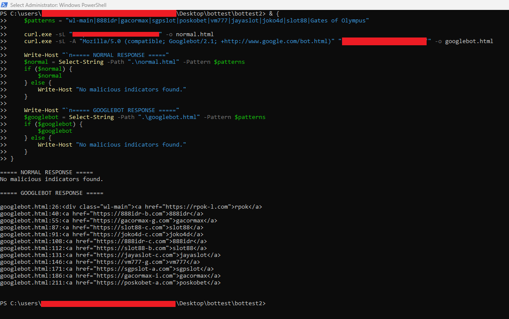
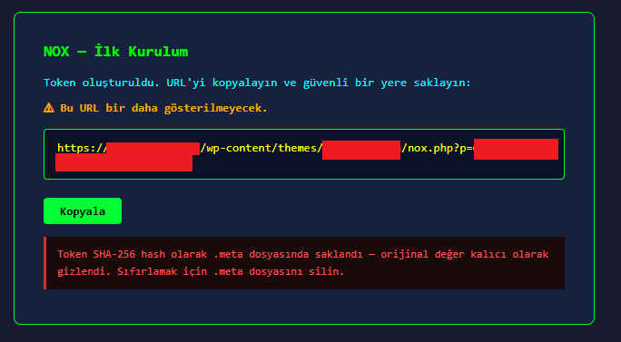
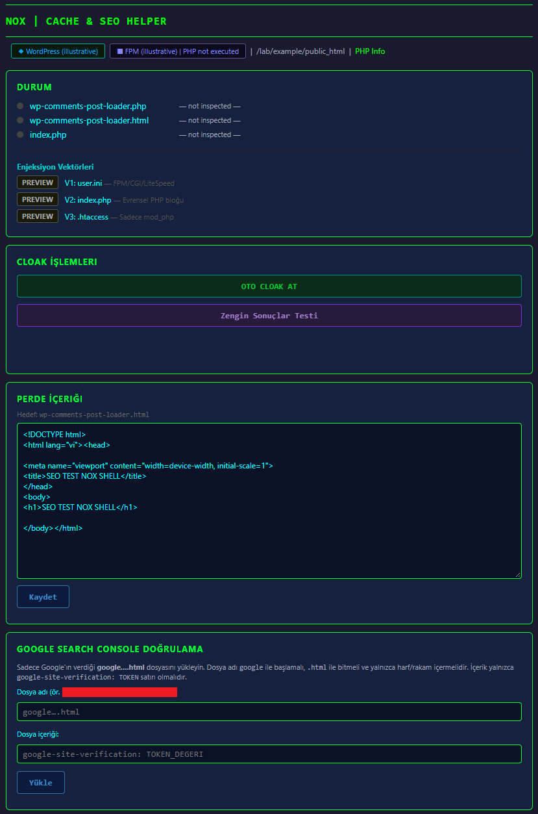

SEO Cloaking and NOX in a WordPress Compromise
An apparent website defacement led to a JavaScript redirect, live SEO cloaking, and recovered PHP tools. The investigation shows why browser evidence, crawler responses, and file findings need to be tested separately.
Executive Summary
Spaling Advisory received a referral for apparent website defacement. The investigation uncovered more than altered pages: a JavaScript redirect, active SEO cloaking, and malicious PHP tools. Chrome DevTools established how the redirect worked; comparing browser content with Google’s crawler response exposed a separate manipulation of search-engine content.
The findings affected different websites within the engagement. Keeping those observations separate was essential: the redirect had a confirmed source file, while the recovered NOX tool demonstrated cloaking capabilities on another domain where its cloaking functions were inactive.
Trace the redirect in Chrome DevTools
One website intermittently sent visitors to an advertising destination. Spaling Advisory captured the browsing session in Chrome DevTools and examined the request sequence in the Network tab. The first question was whether the website returned an HTTP redirect or delivered code that redirected the browser after loading.
The initial homepage request returned HTTP 200. Its response began with an external script reference, followed by a hosting control panel’s default test page. DevTools captured the external JavaScript as well: it assigned an advertising URL to window.location.href.
| Network observation | What it established |
|---|---|
| Homepage returned HTTP 200 with a script reference | The browser received a page containing the instruction to load external JavaScript |
| Browser requested the external script | The script reference in the returned HTML was followed during page loading |
| Script set window.location.href | The onward navigation was triggered by JavaScript, rather than an initial HTTP 301 or 302 response |
The relevant response fragments are shown below with domains replaced by reserved placeholders.
<script src="//script.example/"></script>window.location.href = "https://redirect.example/";Follow the browser evidence back to the file
The script hostname provided a concrete search term. Review of the site’s document root found the same script at the start of index.html, followed by the default test page seen in DevTools. This connected the browser’s response to a malicious file within the website content.
A historical copy of another website also contained the script. That extended the search for affected content, but did not establish that the archive caused the live redirect. The redirect was now explained; the abnormal search results still required a separate test.
Compare what visitors and Google received
Google search results displayed page code, while Bing results included gambling terms. Historical indexing was initially plausible. However, Search Console’s crawled HTML contained gambling links absent from the ordinary browser source of another website in the engagement.
The important distinction was between the content delivered in a response and what the browser displayed after processing it. The DevTools investigation had already shown why a page’s appearance alone was insufficient. Here, the discrepancy between browser source and crawler HTML made the requesting user agent the next variable to test.
Spaling Advisory fetched the same homepage twice, saving the responses separately. The first request used curl’s default user agent. The second supplied a Googlebot user agent. Both saved files were searched for the same wl-main marker and gambling terms.

Figure 1 PowerShell response comparison. Target URLs and local account names are redacted. The default request returned no matches for the selected patterns; the Googlebot request returned gambling links.
Changing the user agent was enough to reproduce the gambling content from Spaling Advisory’s own connection. This moved the assessment beyond an old search result: the live website was still returning malicious content selectively. Reindexing alone could not correct search results while those responses continued.
The negative result applied to the selected patterns in that response. It did not establish that every page, request condition, or website file was clean.
Search the files and review the PHP tools
Spaling Advisory searched the available website files for response markers, gambling terms, crawler handling, and PHP obfuscation. Those searches did not locate the implementation behind the active cloaking. Their coverage was limited to the supplied files and locations.
YARA Core returned no reported matches. Full rules produced 10 matches across eight files. Code review identified Late.php, an unauthenticated uploader, and nox.php, a control panel for SEO cloaking. The significance came from their code, rather than the rule names alone.
NOX was recovered server side under a different domain from the homepage used in the Googlebot comparison. Its cloaking functions were inactive when inspected, and its presence did not establish that it caused the active cloaking on the other website. The interface views below were prepared for analysis.

Relevant NOX capabilities
Crawler selection. The loader matches Google user agents on / and requires a lock and content file. Exclusions including curl, Playwright, and Chromium override that match.
Alternate response. It returns separate HTML, sends Vary: User-Agent, and exits. Hidden content may be stored outside the website root.
Delivery components. NOX can configure PHP prepend loading, modify index.php, or create a WordPress must-use plugin. These components can operate independently of the panel.

Figure 2 NOX setup view and dashboard preview. Identifying values and the access token are redacted. Dashboard runtime values are illustrative.
Validate removal against the original symptoms
The investigation produced two different validation requirements. For the redirect, the delivered HTML must no longer reference the malicious script and the browser must no longer follow that navigation chain. For SEO cloaking, repeated visitor and crawler requests must return the intended content through the public delivery path.
File removal and signature scans support that work, but response testing determines whether the original symptoms remain. PHP configuration, loaders, must-use plugins, hidden content, and search-engine ownership artifacts also require review. Complete eradication was not established in the available evidence.
Appendix Hunting artifacts and indicators
Client identifiers are withheld. Observed response artifacts and recovered files are distinguished from capabilities derived from NOX source review; the latter are search leads, not proof of installation.
| Artifact or marker | Evidence status | Hunting use |
|---|---|---|
| Script reference in index.html and window.location.href | Confirmed redirect mechanism | Trace HTML, script requests, and resulting navigation |
| wl-main with gambling links | Observed crawler response | Compare responses under different user agents |
| nox.php | Recovered and reviewed | Inspect cloaking manager and related components |
| Late.php, upl_files, file_n | Recovered and reviewed | Inspect unauthenticated upload handling |
| wp-comments-post-loader.php, nox-google-bot-bypass.php | NOX capabilities | Trace loaders and must-use plugins |
| NOX-CLOAK-START, NOX-HT-START, auto_prepend_file | NOX search leads | Inspect PHP entry points and configuration |
| .render-cache, render.lock, .nox-content, .nox-* | NOX storage and activation capabilities | Include hidden paths and external content storage |
| google*.html, google-site-verification | Verification search leads | Reconcile files with authorized ownership |
SHA-256 of the supplied NOX PHP artifact, including its UTF-8 BOM:
97ba51d7819b1c41bf79f931197659a027936a644904bd8bbfd89beae04c1214